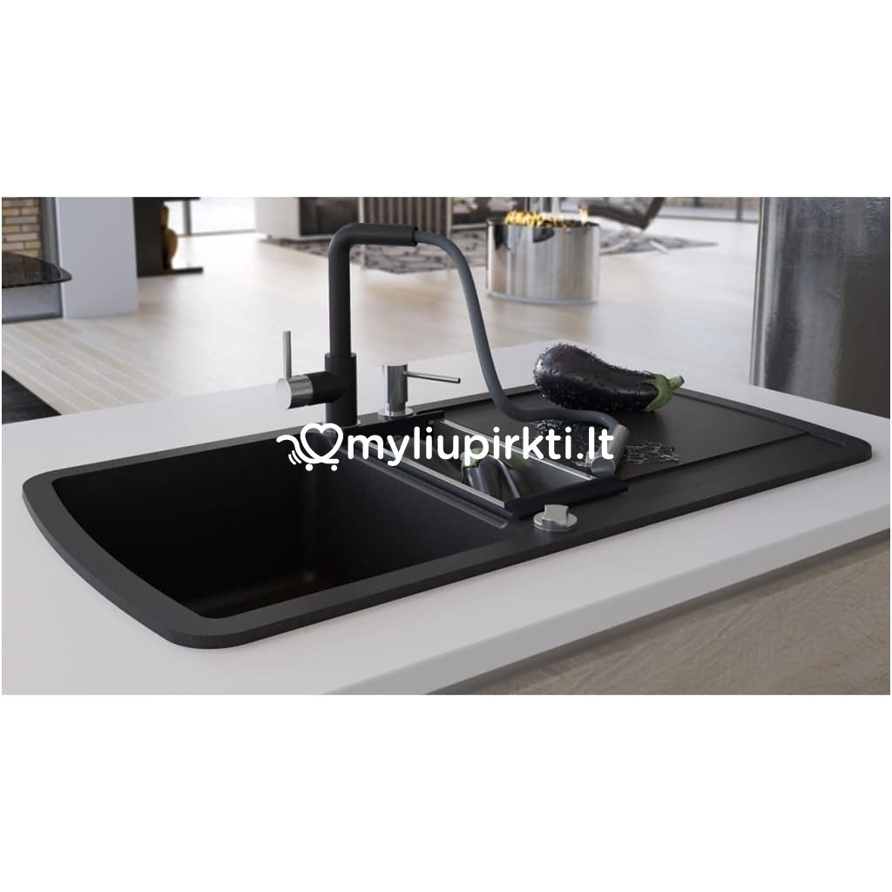

virtuvinė įranga
virtuvinė įranga. Rekvizitai.lt

Lietuvos įmonių katalogas: Vilnius , Kaunas , Klaipėda , Šiauliai , Panevėžys , Alytus . Detali paieška Įmonių kodai Duomenų rinkmenos TOP įmonės 2020 Pagalba Reklama Langai | Durys Kontaktai virtuvinė įranga
Detali paieška
Jei Jums reikalingi duomenys Excel lentelėje, spauskite čia Detali ir nemokama įmonių, organizacijų paieška pagal pavadinimą, įmonės ir PVM kodą, adresą, darbuotojų skaičių, skolas, veiklos sritį, apyvartą, registracijos datą, transporto skaičių ir kt. Norint rasti įmones, nebūtina užpildyti visų paieškos formos laukų. Nauja įmonių paieška | Papildyti įmonių paiešką Rasta įmonių: 30 Vilniuje (8) Kaune (11) Klaipėdoje (2) Šiauliuose (1) Panevėžyje (1) Visi miestai (30) Vilniuje (8) Kaune (11) Klaipėdoje (2) Šiauliuose (1) Panevėžyje (1) Jonavos r. (1) Kauno r. (1) Mažeikiuose (1) Palangoje (1) Rokiškyje (1) Telšių r. (1) Vilkaviškyje (1) Visi miestai (30) Daugiau miestų... 1 2 Kitas DanekaVirtuvės ir vonios kambario buitinė technika
Adresas: Pramonės pr. 8E, LT-51223 Kaunas.
Veiklos sritys: buitinė technika; didmeninė prekyba; mažmeninė prekyba; restoranų, kavinių, barų įranga.
Daneka, UAB - didmeninė prekyba buitine technika bei mažmeninė prekyba buitine technika Kaune, prekyba virtuvės įranga ir kitomis elektros prekėmis virtuvei ir buitinė technika voniai. Naudota buitinė technika ir buitinė technika su defektais prekyba Kaune bei įmontuojama buitinė technika Daneka, UAB virtuvės ir... Įrangos detalių sistema
IDS
Adresas: Kirtimų g. 49B, LT-02244 Vilnius.
Veiklos sritys: restoranų, kavinių, barų įranga; buitinė technika; elektros instaliacijos darbai; kepyklos; maisto gamybos ir perdirbimo įrengimai; pardavimo automatai; pramonės įrengimai; prekybos įranga; šaldymo įrenginiai.
UAB Įrangos detalių sistema pagrindinė veikla – atsarginės detalės profesionaliai restoranų, kavinių, barų, picerijų, kepyklų, konditerijos ir kulinarinių cechų įrangai. IDS sandėlyje Vilniuje daugiau nei 10.000 pozicijų detalių, skirtų žymiausių Europos gamintojų įrengimams. UAB Įrangos detalių sistema ... Index
Pramoninė šaldymo įranga, šaldymo kameros, vitrinos
Adresas: Savanorių pr. 219, LT-50182 Kaunas.
Veiklos sritys: šaldymo įrenginiai; pramonės įrengimai; prekybos įranga; restoranų, kavinių, barų įranga; ventiliacija, kondicionavimas.
UAB „INDEX“ siūlo šiuolaikinius, tiek standartinius, tiek ir nestandartinius sprendimus komerciniam ir pramoniniam šaldymui, pasaulyje lyderiaujančių gamintojų produkciją, projektuoja šaldymo, vėdinimo ir kondicionavimo sistemas. Didelę patirtį turinčių kompanijos specialistų žinių bagažas, patikimų tiekėjų ir... Dayton
Adresas: Kirtimų g. 59, LT-02244 Vilnius.
Veiklos sritys: maisto gamybos ir perdirbimo įrengimai; prekybos įranga; šaldymo įrenginiai; ventiliacija, kondicionavimas.
UAB „Dayton“ – Suomijos kapitalo įmones Dayton Group OY filialas Lietuvoje, teikiantis kompleksinius sprendimus restoranų, viešbučių, kitų maitinimo įstaigų virtuvių, pramoninių maisto gamybos cechų, parduotuvių, prekybos centrų, sandėliavimo ir kitų patalpų įrengimui. Ilgametė patirtis Lietuvoje, partnerystė su... Britama
Adresas: Šlaito g. 2, LT-54361 Kaunas.
Veiklos sritys: buitinė technika; santechnika; šaldymo įrenginiai; ventiliacija, kondicionavimas.
UAB “Britama” – prekiauja profesionalia buitine technika, sulčiaspaudėmis, maisto džiovintuvais, blenderiais, oro drėkintuvai ir kt. Atstovaujame pasaulyje žinomus ir senas tradicijas turinčius prekinius ženklus, tokius, kaip Vitamix, Excalibur, Tribest ir kt. Taip pat prekiaujame įvairiais virtuvės įrangos... TOKĖ LT
Porolono kempinių, šluosčių, šveistukų gamyba ir didmeninė prekyba
Adresas: Pieninės g. 15, Čičinų k., LT-55243 Jonavos r.
Veiklos sritys: valymo priemonės; autokosmetika; didmeninė prekyba; dovanos; eksportas; gamyba; higienos reikmenys; švaros, valymo paslaugos; ūkio prekės.
TOKĖ LT, UAB įmonės veikla–porolono kempinių, šveistukų, šluosčių gamyba ir didmeninė prekyba. Porolono kempinės virtuvei, vonios kambariui, kūno priežiūrai, automobilių valymui, taip pat drėgnos poroloninės kempinės, universalaus naudojimo bei grindų šluostės. TOKĖ LT, UAB įmonė įsteigta 2008, tačiau patirtis... VARLE
VARLE.LT
Adresas: Vienybės g. 102, LT-70152 Vilkaviškis.
Veiklos sritys: interneto parduotuvės; buitinė technika; didmeninė prekyba; įrankiai; kompiuteriai ir programinė įranga; kompiuterių remontas, it paslaugos; mažmeninė prekyba; telekomunikacijos, ryšio priemonės; vaikų prekės; video ir audio aparatūra, paslaugos, remontas.
KAI REIKIA KAINOS IR PATARIMO VARLE.LT – užsakomųjų parduotuvėlių tinklas, kuriose galima užsisakyti ir atsiimti didžiumą kompiuterinės ir buitinės technikos prekių už internetinę kainą. Mes esame tarsi tarpinis variantas tarp didelių prekybos centrų ir internetinių parduotuvių. VARLĖS dirba su didžiaisiais... Fenster
Zyle Fenster
Adresas: Fermentų g. 4-1, Vilnius.
Veiklos sritys: durys, raktai, spynos; eksportas; fasadas, fasado apdaila; langai; mediena, jos gaminiai; metalas, apdirbimas, gaminiai; stiklas ir jo gaminiai.
Daugiau kaip 1000 šeimų visoje Europoje ir už jos ribų naudojasi aukščiausios kokybės produkcija, pagaminta „Zyle Fenster“ komandos, turinčios daugiau nei 20 metų patirtį, langų gamybos pramonėje. Bendradarbiaujame su vietos bei užsienio architektais, inžinieriais ir statybininkais, kurdami nepakartojamus namus... Mažeikių Varduva
Statybinės ir apdailos medžiagos
Adresas: Naujoji g. 4, LT-89101 Mažeikiai.
Veiklos sritys: statybinės medžiagos; autoservisai; eksportas; interjero apdailos medžiagos; mažmeninė prekyba; padangos, ratlankiai; patalpų nuoma; santechnika; statyba; šiltinimas, renovacija.
MAŽEIKIŲ VARDUVA - viena iš didesnių statybinių ir apdailos prekių įmonių Lietuvoje, plėtojanti ir kitus verslus: specializuotų statybos darbų, autoserviso paslaugų bei komercinių ir sandėliavimo plotų nuomos Vakarų Lietuvoje. Visa tai priklauso vienam prekių ir paslaugų ženklui VARDUVA. Pagrindinės veiklos... AG BALDAI
Baldų galerija, virtuvės badai, korpusiniai baldai
Adresas: Degaičių g. 14D, Degaičių k., LT-88103 Telšių r.
Veiklos sritys: baldai (gamyba); baldai (prekyba); baldų gamybos medžiagos, furnitūra; didmeninė prekyba; gamyba; grafika, dizainas; interjero apdailos medžiagos; mažmeninė prekyba; projektavimas.
UAB AG Baldai įsteigta 2008 m. Mūsų patirtis baldų gamyboje - nuo 2001 m. Įmonės pagrindinė veikla: individualių korpusinių baldų projektavimas, gamyba, montavimas ir prekyba. Teikiame laminuotų plokščių pjovimo, briaunavimo PVC ir ABS briaunomis paslaugas. Įmonė gamina: Virtuvės baldai Prieškambario baldai Vaikų... Klasikinė tekstilė, A. R. Baumilų TŪB
Lininių audinių audimas ir siuvimas Kaune
Adresas: Brastos g. 9, LT-47184 Kaunas.
Veiklos sritys: audiniai, patalynė; apranga, drabužiai; didmeninė prekyba; dovanos; eksportas; gamyba; siuvimas, medžiagos.
A.R. Baumilų TŪB ,,Klasikinė tekstilė“ - sėkmingai vykdanti veiklą nuo 1991m. lino tekstilės gamybinė įmonė Kaune. Šiuo metu įmonėje dirba apie 300 darbuotojų. Gamybinis plotas - 16 000 kv.m. Pagrindinės įmonės veiklos kryptys: lininių audinių audimas, audinių apdaila, skaitmeninis marginimas, lininių gaminių... Index-K
EUROTOPAS - interjero apdailos medžiagos
Adresas: Savanorių pr. 166, LT-44149 Kaunas.
Veiklos sritys: interjero apdailos medžiagos; akmens gaminiai; didmeninė prekyba; durys, raktai, spynos; grindys, grindų dangos; mažmeninė prekyba; mediena, jos gaminiai; santechnika; statybinės medžiagos.
EUROTOPAS – prekės ženklas, vienijantis naujausias interjero apdailos medžiagas iš Italijos, Ispanijos, Vokietijos, Prancūzijos, Švedijos ir kitų Europos šalių. Mūsų tikslas – formuoti kliento skonį ir padėti išsirinkti reikiamas medžiagas, kuriant jaukią namų ar biuro aplinką. Kokybiškos interjero apdailos... VR Electric
Elektrotechnikos dalys ir įranga
Adresas: Ateities pl. 30A, LT-52163 Kaunas.
Veiklos sritys: elektros dalys ir įranga; automatizavimas, automatika; didmeninė prekyba; elektros montavimo medžiagos; šildymas, įrenginiai; šviesos sistemos, šviestuvai.
KARANTINO LAIKOTARPIU, DARBUS VYKDOME, UŽSAKYMAI PRIIMAMI EL.PAŠTU IR TELEFONU! Didmeninė ir mažmeninė prekyba elektrotechnika bei elektrotechnikos priedas - pagrindinė VR ELECTRIC, UAB veikla. ELEKTROTECHNIKA Jungikliai ir lizdai Buitiniai jungikliai ir lizdai VALENA VIKO by PANASONIC VILMA Pramoniniai jungikliai... Gerdus
RADWAG, ROMASAS
Adresas: Kalvarijų g. 272A, LT-08339 Vilnius.
Veiklos sritys: didmeninė prekyba; laboratorijos, įranga; matavimo prietaisai.
UAB „GERDUS“ - jauna, dinamiška įmonė plėtojanti savo veiklą matavimo prietaisų ir laboratorinės įrangos srityse. Esame RADWAG, SECA, MILWAUKEE oficialūs atstovai Lietuvoje, ROMASAS svarstyklių gamintojo atstovas Vilniuje, prekiaujame KERN, ADWA, JOHNSON TEST PAPERS, GLENAMMER, HANNA INSTRUMENTS produkcija ir... Algonika
Adresas: Liepų g. 12, Kluoniškių k., LT-53416 Kauno r.
Veiklos sritys: metalas, apdirbimas, gaminiai; baldai (gamyba); baldai (prekyba).
UAB „Algonika“ – tai metalo apdirbimo įmonė, įkurta 2002 metais. Pagrindinė įmonės veikla yra metalo produktų gamyba baldų pramonei ir miltelinio dažymo paslaugos. Įmonė nuo įkūrimo sėkmingai dirba metalo apdirbimo srityje: gamina baldų furnitūrą ir nestandartinius metalo gaminius baldų pramonei, įvairias... 1 2 Kitas
Verslo naujienos, ekonomikos aktualijos, straipsniai
Programišiai pavogė 2,3 mln. USD iš Respublikonų partijos 10-29 20:57Kompiuteriniai sukčiai pavogė 2,3 mln. USD iš Respublikonų partijos banko sąskaitos Viskonsine, iš kurios finansuojamos prezidento Donaldo Trumpo pastangos laimėti šioje svarbioje "svyruojančioje"... BBC paskelbė naujas gaires darbuotojų pasisakymams socialiniuose tinkluose 10-29 19:47
Britų visuomeninis transliuotojas BBC ketvirtadienį pristatė naujas nešališkumo gaires, sulaukęs kaltinimų, kad žurnalistai ir kiti darbuotojai kelia grėsmę pasitikėjimui transliuotoju, skelbdami... Helovinas Lietuvoje: objektai, apipinti šiurpiomis istorijomis 10-29 19:13
Panašu, kad kelionės po Lietuvą, į atokesnius, primirštus objektus, vėl tapo bene vienintele saugesne pramoga. Šį ilgesnį savaitgalį nacionalinė turizmo skatinimo agentūra "Keliauk Lietuvoje" ir... Kitos naujienos
Prisijungti prie katalogo
Kaip įvesti naują įmonę kataloge? Kaip atnaujinti įmonės informaciją?Partneriai
Valiutų kursai
JAV doleris USD 0,8544 € Svaras sterlingų GBP 1,1058 € Lenkijos zlotas PLN 0,2163 € Rusijos rublis RUB 0,0107 € Baltarusijos rublis BYN 0,3247 € Kinijos juanis CNY 0,1273 € Šveicarijos frankas CHF 0,9360 € Daugiau valiutų kursų Lietuvos bankas, 2020-10-30Akcijų kainos
General Electric 7,42 +4,51% CBS 40,77 +3,63% Symantec 23,75 +1,45% Red Hat 187,71 0,00% Google 1516,62 -5,46% Facebook 267,67 -5,51% NVIDIA 505,08 -5,75% Xerox 17,23 -6,97% Daugiau akcijų kainųŽaliavų kainos pasaulyje
Sidabras 25,74 -4,67% Benzinas 1,23 -1,60% Vištiena 1,47 -2,00% Jautiena 4,60 -0,65% Nafta 39,57 +2,62% Apelsinai 0,61 -1,61% Dujos (JAV) 1,92 -16,16% Cukrus 0,59 -1,67% Daugiau žaliavų kainųNaujos įmonės
Donvlada , Riešės evangelinė bažnyčia , Am pervežimai , Du gurmanai , Metalšlifas , Rimorenta , Forte NT , Žibintų remontas , Vėjų technologijų parkas , G-Amber , Waste management , Agrotakas.com , Gražūs sprendimai , Potio , Alytaus sporto valdyba , Reklamos ekranas , GM transportas , Liverinn technologies , Sintecs , Karo istorijos klubas Rytų frontas , Ajarsta , Baltymų technologijos , Visa teisė , Memel project , Good habits , Sotros , Ad-audiniai , Rational Foreign Exchange EU , Spurit , MatriksasNauji atsiliepimai, skundai apie imones
Tele2, UAB , VAGOS prekyba, UAB , Lietuvos paštas, AB , All Media Lithuania, UAB , Lietuvos radijo ir televizijos centras, AB , Trenk.lt, MB , ERGO Life Insurance SE , Kesko Senukai Lithuania, UAB , Autokora, UAB , Omniva LT, UAB , Skaidrola, UAB , Klaipėdos apskrities vyriausiasis policijos komisariatas , Konstrado, UAB , Respublikinė Klaipėdos ligoninė, VšĮ , UAB „Izotechna“ , UAB ITCC , UAB Versina , Maxima LT, UAB , Aukcionas 123, UAB , Vinted, UAB , Akcinė draudimo bendrovė „Gjensidige , Antstolių I. Gaidelio ir V. Meškauskienės ir D. Traigio kontora , INTEGAS UAB , Tete-a-tete kazino, UAB , UAB RV Oferta , R. Baltrūno įmonė , Pepco Lithuania, UAB , Bitė Lietuva, UAB , Šiaulių bankas, AB , Sporto klubas PanteraPaskutinės paieškos
UAB R P KONSULTACIJOS , kat kategorijos , Kroviniu pervežimas , vaiku.g , uab motor , pajurio vartai , matijosaitis , kameros lietuvoje , SILKA , Promo Kit UAB , UAB Vitras- S , A 2 cargo , juodalksnio baldai , internetine , parkavimo sistemos montavimas , EKO PAGALBA UAB , Autovežiai , pramonės įrengimų gamyba , uab dantu , žemaitijos pie , padangu partneris , priekabų gamyba , Stomatologai , vairavim , uab i service , ledai didmenine prekyba , balčiu , Kšištofas Zachaževskis , artele , Siaures Lietuvos kolegija , Kruonio statyba , metaliniai vamzdžiai , surenkami angarai .daugiasluoksnių , gyvybes , Lietuvos jaunimo darbuotojai , technologija N , plyteliu klijavimas. , automobilių gabenimas iš Italijos , Triumph-Adler , Vairo kolonėlės restauravimas Vilniuje , iškrovimas , laimis , HOROS UAB , konstrukciju , linas uab , administratorius , komisas , BALDU , A HOLDING uab , paleciu vyniotuvai © 2008-2020 Rekvizitai.ltLT EN DE RU FR ES PL CN
Lietuvos imones, įmonių katalogas, duomenys Detali paieška Pašto kodai Taksi Lietuvoje Valiutų kursai Įmonių kodai PVM kodai Įmonių pranešimai Bankrutavusios įmonės Ekonomikos rodikliai Orai Įstatymai Dokumentų pavyzdžiai Akcijų kainos Žaliavų kainos Viešieji pirkimai Apklausos Verslo naujienos Naudinga informacija Patarimai Skundai Nauja įmonė Taisyklės Pagalba Privatumo politika Duomenų rinkmenos Stipriausi Lietuvoje Reklama Kontaktai
Posted by Jack  Read more
Read more  Comments (15)
Comments (15)  2020.10.30 04:09
2020.10.30 04:09